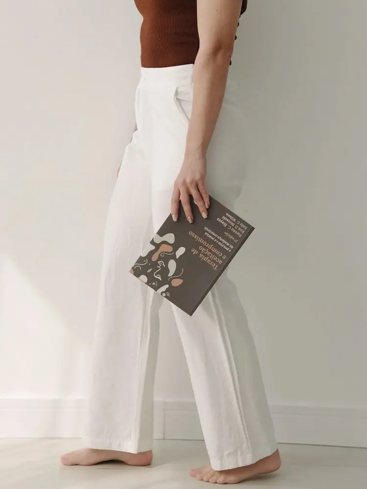

Paleta de cores
Medida no navegador: fundos ponderados pela área ocupada, textos pela quantidade de caracteres. Destaques reúnem cores saturadas e fundos de botão.
Fundos
rgb(188, 198, 206)
rgb(250, 249, 248)
rgb(242, 239, 234)
rgb(149, 165, 177)
rgb(121, 142, 157)
rgb(68, 82, 97)
Textos
rgb(94, 93, 90)
rgb(72, 60, 51)
rgb(53, 68, 91)
rgb(122, 122, 122)
rgb(114, 125, 90)
rgb(255, 255, 255)
Destaques
rgb(53, 68, 91)
Gradientes
radial-gradient(165.91% 647.63% at 45.92% -308.33%, rgb(75, 96, 129) 0%, rgb(121, 142, 157) 100%)Tipografia
Escala usada (desktop 1440px)
| Tamanho | Peso | Família | Amostra |
|---|---|---|---|
| 56px | 700 | Noto Serif TC | Texto de exemplo |
| 48px | 700 | Noto Serif TC | Texto de exemplo |
| 44px | 700 | Noto Serif TC | Texto de exemplo |
| 40px | 700 | Noto Serif TC | Texto de exemplo |
| 32px | 700 | Noto Serif TC | Texto de exemplo |
| 24px | 400 | Onest | Texto de exemplo |
| 22px | 700 | Noto Serif TC | Texto de exemplo |
| 21px | 500 | Onest | Texto de exemplo |
| 19px | 500 | Onest | Texto de exemplo |
| 18px | 500 | Onest | Texto de exemplo |
Mobile (390px): 48px/700, 32px/700, 28px/700, 24px/700, 19px/400, 19px/500, 18px/500, 17px/500 · H1 no mobile: 28px
Tags
| Tag | Família | Tamanho | Peso | Altura de linha | Espaçamento | Caixa | Cor |
|---|---|---|---|---|---|---|---|
| <h1> | Noto Serif TC | 56px | 700 | 67.2px | normal | none | #483C33 |
| <h2> | Onest | 24px | 400 | 31.2px | normal | none | #35445B |
| <h3> | Onest | 20.8px | 500 | 24.96px | normal | none | #483C33 |
| <h4> | Noto Serif TC | 48px | 700 | 72px | normal | none | #483C33 |
| <p> | Onest | 16.8px | 400 | 25.2px | normal | none | #5E5D5A |
Botões
Recriados com os estilos computados reais. Efeitos de hover e animação não aparecem aqui; veja a seção de animações.
fundo #00000000 · texto #FFFFFF · raio 4px · padding 20px 40px · 18.4px/500 none · 1x na páginafundo #61CE7000 · texto #35445B · raio 4px · padding 18px 40px · 18.4px/500 none · 1x na páginafundo #00000000 · texto #FFFFFF · raio 4px · padding 20px 50px · 18.4px/500 none · 1x na páginaCards e containers
Segurança emocional Desenvolva a capacidade de sentir ansiedade sem deixar que ela conduza
raio 16px · sombra none · borda 1px solid rgba(114, 125, 90, 0.16) · 334x205pxAnsiedade constante Sua mente está sempre um passo à frente, antecipando problemas que ain
raio 4px · sombra none · borda 1px solid rgba(114, 125, 90, 0.16) · 616x123pxPrimeiro contato Você chega pelo WhatsApp e compartilha, no seu tempo, o que está sentindo
raio 4px · sombra none · borda 0px none rgb(51, 51, 51) · 298x227pxEvelyn Mendes Oliveira Psicóloga - CRP 05/64804
raio 0px 0px 24px 23px · sombra none · borda 1px solid rgba(114, 125, 90, 0.16) · 612x101pxBordas, raios e sombras
Sombras
Sem sombras relevantes.
Espaçamentos
- Largura do conteúdo mais comum: 1392px
- Padding vertical das seções (topo/base): 0px/0px (8x), 16px/16px (1x)
- Gaps mais usados (flex/grid): 16px, 20px, 0px 10px, 24px, 8px, 32px
- Altura total da página: 7090px em 9 seções
Estrutura e ritmo de cores das seções
Cada faixa é uma seção de topo, com altura proporcional e a cor ou imagem de fundo real.
Animações, ícones e bibliotecas
- Keyframes próprios: brilho, fadeIn, mensagem, sbi-sk-scaleout, seta
- Animações de entrada do Elementor: fadeIn, none
- Classes de scroll reveal da casa: scroll-bottom, scroll-left, scroll-right, scroll-top
- Ícones: 38 SVG, 0 ícones de fonte
- Bibliotecas e tags detectadas: ga4, gsap, jquery, lenis, lottie, swiper
Snippets da biblioteca presentes nesta página
- Nenhum snippet da biblioteca identificado.
Imagens do site
